전파전자통신기사 (2019-03-09 기출문제)
1과목: 디지털전자회로
1. 다음 중 정전압 회로에 대한 설명으로 옳은 것은?
- 입력신호의 에너지를 증가시켜 출력 측에 큰 에너지의 변화로 출력하는 회로
- 교류전압을 사용하기 적당한 직류전압으로 변환하여 주는 회로
- 출력 내에 포함되어 있는 리플성분을 제거시켜 일정한 크기의 전압을 유지시키는 회로
- 입력전압, 출력부하 전류 및 온도에 상관없이 일정한 직류 출력 전압을 제공하는 회로
(정답률: 73%)

2. 바이어스(Bias) 전압에 따라 정전 용량이 달라지는 다이오드는?
- 제너(Zener) 다이오드
- 포토(Photo) 다이오드
- 바렉터(Varactor) 다이오드
- 터널(Tunnel) 다이오드
(정답률: 70%)
3. 다음 정전압 회로에서 출력전압(V0)으로 맞는 것은? (단, VZ=Vf)이다.)
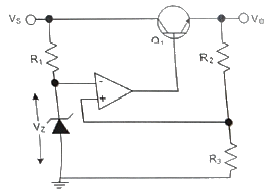
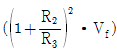
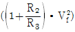
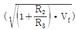
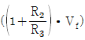
(정답률: 63%)
4. 궤한을 걸지 않았을 떄 전압 이득이 30이고 고역 차단 주파수가 20[kHz]인 증폭기에 궤환을 걸어 전압 이득이 20으로 되었다면, 궤환시의 고역 차단 주파수는?
- 10[kHz]
- 20[kHz]
- 30[kHz]
- 40[kHz]
(정답률: 59%)
5. 다음 회로에서의 출력 파형으로 옳은 것은?
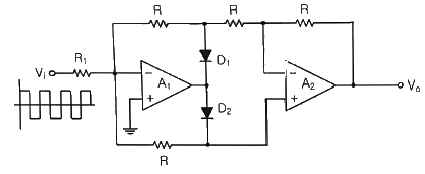
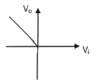
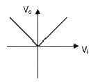
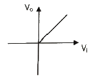
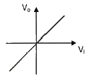
(정답률: 78%)
6. 다음 연산증폭기에서 R1=R2=100[kΩ], Rf=25[kΩ]이고, V1=2[V], V2=4[V]일 때 출력전압 V0는?
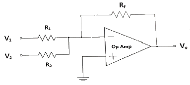
- -1.3[V]
- -1.5[V]
- -1.7[V]
- -2.0[V]
(정답률: 63%)
7. 다음은 BJT 증폭기 회로를 나타내었다. 커패시터 CE를 사용한 목적으로 적절한 것은?
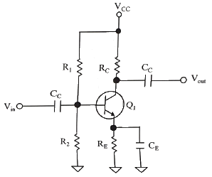
- 증폭기의 이득을 증가시킨다.
- 리플성분을 감소시킨다.
- 직류성분을 통과시킨다.
- 병렬궤환을 발생한다.
(정답률: 83%)
8. 다음 그림과 같은 회로에서 결합계수가 0.5이고 발진주파수가 200[kHz]일 경우 C의 값은 얼마인가? (단, π는 3.14이고 , L1=L2=1[mH]로 가정한다.)
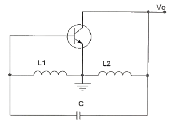
- 211.3[uF]
- 211.3[pF]
- 422.6[uF]
- 422.6[pF]
(정답률: 75%)
9. 다음 중 RC 궤환발진기의 종류 중 빈 브리지(Wien Bridge) 발진기에 관한 설명으로 옳은 것은?
- 3단으로 구성된 위상 선행회로를 궤환으로 사용하고, 기본 증폭기로는 폐루프 전압이득이 29인 반전증폭기를 사용하는 발진기이다.
- 발진기에서 발생되는 발진주파수는
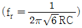
이다. - 회로에서 발진이 일어나기 위해서는 정궤환 루프의 위상천이가 0°이고 루프이득이 0 이어야 한다.
- 사인파 발진기의 일종으로 지상-진상회로로 구성되며, 발진에 필요한 증폭기 이득은 3이다.
(정답률: 45%)
10. 발진회로와 증폭회로의 설명으로 틀린 것은?
- 발진회로와 증폭회로는 적절한 직류전원이 공급되어야 한다.
- 발진회로와 증폭회로 모두 적절한 궤환회로를 적용할수 있다.
- 발진회로와 증폭회로는 출력파형에 왜곡이 발생할 수 있다.
- 발진회로와 증폭회로는 외부에서 입력되는 교류신호가 필요하다.
(정답률: 57%)
11. 다음 중 정보 전송에서 반송파로 사용되는 정현파의 위상에 정보를 싣는 변조 방식은?
- PSK
- FSK
- PCM
- ASK
(정답률: 73%)
12. 다음 중 AM방식과 비교한 FM방식에 대한 설명으로 틀린 것은?
- 단파 대역에 적당하지 않다.
- 수신의 충실도를 향상시킬 수 있다.
- 잡음을 보다 감소시킬 수 있다.
- 피변조파의 점유주파수대역이 좁아진다.
(정답률: 87%)
13. 다음 중 아날로그 신호로부터 디지털 부호를 얻는 방법이 아닌 것은?
- PM(Phase Modulation)
- DM(Delta Modulation)
- PCM(Pulse Code Modulation)
- DPCM(Differential Pulse Code Modulation)
(정답률: 56%)
14. 일정시간 동안 200개의 비트가 전송되고, 전송된 비트 중 15개의 비트에 오류가 발생하면 비트 에러율(BER)은?
- 7.5[%]
- 15[%]
- 30[%]
- 40.5[%]
(정답률: 84%)
15. 다음 중 높은 주파수 성분에 공진하기 때문에 생기는 펄스 상승부분의 진동 정도를 무엇이라 하는가?
- 새그(Sag)
- 링잉(Ringing)
- 언더슈트(Undershoot)
- 오버슈트(Overshoot)
(정답률: 83%)
16. 그림과 같은 회로의 전달 특징은? (단, VR1＜VR2)
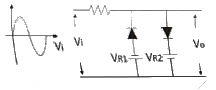
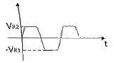
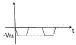
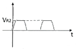
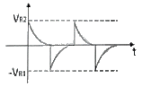
(정답률: 80%)
17. 다음 회로에서 정논리의 경우 게이트 명칭은?
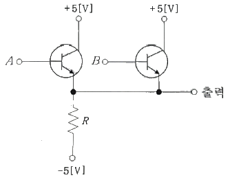
- AND 게이트
- OR 게이트
- NAND 게이트
- NOR 게이트
(정답률: 83%)
18. 2진수 1110을 2의 보수로 변환한 것으로 맞는 것은?
- 1010
- 1110
- 0001
- 0010
(정답률: 53%)
19. 다음 중 전가산기(Full Adder)에 대한 설명으로 옳은 것은?
- 아랫자리의 자리올림을 더하여 그 자리 2진수의 덧셈을 완전하게 하는 회로이다.
- 아랫자리의 자리올림을 더하여 홀수의 덧셈을 하는 회로이다.
- 아랫자리의 자리올림을 더하여 짝수의 덧셈을 하는 회로이다.
- 자리올림을 무시하고 일반계산과 같이 덧셈을 하는 회로이다.
(정답률: 88%)
20. 다음 그림과 같은 회로의 명칭은?
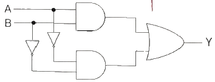
- 일치 회로
- 시프트 회로
- 카운터 회로
- 다수결 회로
(정답률: 77%)
2과목: 무선통신기기
21. 다음 중 펄스 정형 필터(Pulse Shaping Filter)에 대한 설명으로 틀린 것은?
- 대역폭 제한을 한다.
- 심볼간 간섭(ISI)을 감소시킨다.
- 제곱근 레이즈드 여현필터(Root Raised Cosine Filter)를 사용한다.
- 신호 왜곡을 보상한다.
(정답률: 84%)
22. DSB 변조에서 정현파로 변조된 피변조파의 변조도(m)가 0.6이고, 반송파의 평균전력(Pc)이 1,000[W]일 때, 피변조파의 전력은?
- 1,360[W]
- 1,180[W]
- 1,600[W]
- 1,300[W]
(정답률: 80%)
23. 다음 중 컬러 TV 수신기에서 색동기 회로의 구성 요소가 아닌 것은?
- 대역 증폭회로
- 버스트 증폭회로
- 3.58(3.58[MHz])발생기
- 이상기(위상 지연기)
(정답률: 53%)
24. 다음 중 전력증폭기에서 RF파워 모듈 사용시 주의해야 할 점이 아닌 것은?
- 실드 케이스 등의 접지를 완벽히 한다.
- 모듈의 리드선은 가능한 한 짧게 한다.
- 입출력 부분의 임피던스 정합에 주의한다.
- 전원 공급선의 디커플링은 생략해도 된다.
(정답률: 73%)
25. 변조도가 1인 DSB파를 제곱 검파하면 왜율은 몇 [%]인가?
- 10[%]
- 20[%]
- 25[%]
- 35[%]
(정답률: 95%)
26. 다음 중 FS 수신기에서 필터를 사용한 경우의 특징으로 틀린 것은?
- 과도한 특성으로 통신속도에 제한을 받는다.
- 주파수 편이가 다른 FS 신호를 수신할 때 마크, 스페이스 필터를 교체해야 한다.
- 통신속도가 빠른 신호 수신에 적합하다.
- 2개의 필터를 사용하여 신호를 재생한다.
(정답률: 56%)
27. 다음 중 FDMA의 특징이 아닌 것은?
- 아날로그 방식으로 구현이 비교적 간단하다.
- 심볼간 간섭(ISI)에 대한 영향을 적게 받으므로 등화기가 필요 없다.
- 인접한 채널간 간섭이 생길 수 있으므로 보호대역이 필요하다.
- 주파수 이용효율에 한계가 없어 사용자숙 유동적이다.
(정답률: 95%)
28. 다음 중 Imarsat Fleet-77을 이용한 긴급통신을 행할 경우 레벨로 적합한 것은?
- Level 1
- Level 2
- Level 3
- Level 4
(정답률: 78%)
29. 다음 보기의 다중화 방법을 기술의 발전 순서대로 올바르게 나열한 것은 어느 것인가?
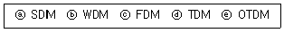
- ⓐ→ⓑ→ⓒ→ⓓ→ⓔ
- ⓐ→ⓒ→ⓓ→ⓑ→ⓔ
- ⓐ→ⓒ→ⓓ→ⓔ→ⓑ
- ⓒ→ⓓ→ⓐ→ⓑ→ⓔ
(정답률: 95%)
30. 다음 중 VHF를 사용한 조난통보에서 필요로 하는 내용이 아닌 것은?
- 조난 종류(상태)
- 조난 선박의 위치(위도·경도)
- 필요로 하는 구조의 종류
- 선장 성명
(정답률: 95%)
31. 다음 중 GMDSS 선박의 항행구역 구분에 대한 설명으로 옳지 않은 것은?
- A1 해역 : 초단파대(VHF) 해안국의 무선전화 통신범위 안의 해역
- A2 해역 : 단파대(HF) 해안국의 무선전화 통신범위 안의 해역으로 A1 해역을 제외한 해역
- A3 해역 : Inmarsat 위성통신권 범위 안의 해역으로 A1 해역 및 A2 해역을 제외한 해역
- A4 해역 : A1·A2·A3 해역 외의 해역
(정답률: 77%)
32. 통신위성시스템은 크게 페이로드 시스템과 버스 시스템으로 구성된다. 다음 중 버스 시스템에 해당하지 않는 것은?
- 자세궤도제어 시스템
- 추진 시스템
- 전원공급 시스템
- 안테나 시스템
(정답률: 85%)
33. 동기식 CDMA(Code Division Multiple Access) 방식에서 확산된 대역폭이 확산 신호전 대역폭의 100배일 경우 확산처리이득(Processing Gain)은 약 얼마인가?
- 10[dB]
- 20[dB]
- 30[dB]
- 40[dB]
(정답률: 83%)
34. 다음 중 인버터 방식에서 전류원과 전압원을 비교할 떄 전압원 인버터의 장점이 아닌 것은?
- 유도 전동기 구동시 속도 제어 범위가 더 넓다.
- 제어회로가 비교적 간단하다.
- 용량성, 유도성 부하 모두에 사용 가능하다.
- 주로 소, 중용량에 사용한다.
(정답률: 84%)
35. 다음 중 납축전지의 구성요소가 아닌 것은?
- 코일
- 음극판
- 격리판
- 전해액
(정답률: 89%)
36. 급전선에서 정재파비가 1인 경우는?
- 반사계수의 값이 1인 경우
- 급전선의 고유 임피던스가 75[Ω]인 경우
- 급전선이 특성 임피던스와 부하 임피던스가 동일한 경우
- 급전선의 표피효과를 무시할 수 있을 경우
(정답률: 82%)
37. 다음 중 AM 송신기의 전력측정 방법으로 적합하지 않은 것은?
- 의사 안테나에 사용하는 방법
- 수부하에 의한 방법
- 양극 손실에 의한 방법
- 오실로스코프에 의한 방법
(정답률: 94%)
38. 다음 중 위성비상위치지시용 무선표지설비의 작동 요건에 대한 설명으로 옳지 않은 것은?
- 자가 부양한 후 자동으로 작동할 수 있을 것
- 이탈장치를 수동으로 제거한 경우 자동으로 작동하지 아니할 것
- 30m 높이에서 물로 떨어뜨렸을 경우에도 손상없이 작동할 수 있을 것
- 수동으로 작동할 경우 조난경보는 전용의 조난경보작동기에 의해서만 작동이 가능할 것
(정답률: 90%)
39. 급전선과 같은 전송선로의 정합상태를 나타내는 것은?
- 정재파비
- 임피던스 정합
- 스미스 도표
- 특성 임피던스
(정답률: 80%)
40. 계수형 주파수 측정 장치에서 Reset 회로의 역할은?
- Gate 시간 조정
- 입력신호레벨 조정
- 계수부를 “0”으로 복귀
- 출력부의 파형 조정
(정답률: 94%)
3과목: 안테나공학
41. 평면파(Plane Wave)에 대한 설명으로 틀린 것은?
- 균일 평면파는 TEM(Transverse Electromagnetic Wave) 모드에 해당된다.
- TEM모드는 진행방향에 직각으로 전계와 자계 성분이 모두 존재하는 모드이다.
- TEM모드는 진행방향에 자계성분만이 존재하는 모드이다.
- TEM모드는 진행방향에 전계와 자계 성분이 존재하지 않는 모드이다.
(정답률: 74%)
42. 다음 중 단파대의 전파특성으로 적합하지 않은 것은?
- 대전력으로 근거리 통신이 가능하다.
- 공전 방해를 적게 받는다.
- 페이딩, 에코, 산란 등의 영향을 받는다.
- 지향성이 양호한 송수신 안테나 이용이 용이하다.
(정답률: 95%)
43. 비유전율 36, 비투자율 1인 매질에서 진동수 30[MHz]인 전자파의 파장은 약 얼마인가?
- 1.67[m]
- 16.67[m]
- 1.98[m]
- 19.98[m]
(정답률: 65%)
44. 다음 중 안테나의 편파에 대한 설명으로 잘못된 것은?
- 안테나의 편파는 송신 안테나에서 주어진 방향으로 복사되어 나가는 파의 편파이다.
- 전파의 전기력선의 방향에 따라 수평 편파와 수직 편파로 분류한다.
- 전기력선의 진동방향과 크기 변화에 따라 직선 편파, 원형 편파, 타원 편파로 분류한다.
- 원형 편파의 축비는 0이다.
(정답률: 94%)
45. 특성 임피던스 300[Ω]인 전송선로와 부하 임피던스 500[Ω]인 전송선로를 직접 접속하면 전압 반사계수는 얼마인가?
- 0.60
- 0.25
- 1.67
- 4.00
(정답률: 65%)
46. 특성 임피던스가 50[Ω]인 급전선에 복사 임피던스가 75+j30[Ω]인 안테나를 연결하였다. 급전선상의 전압 정재파비의 크기는 얼마인가? (단, 계산값은 소수점 둘째자리에서 반올림한다.)
- 1.2
- 1.5
- 1.9
- 2.1
(정답률: 67%)
47. 부정합이 있는 전송선로에서 정재파의 최대전압이 45[V], 최소전압이 9[V]이면 정재파비의 값은 얼마인가?
- 0.2
- 5
- 9
- 45
(정답률: 95%)
48. 극초단파 이상의 전송선로로 도파관이 쓰이는 가장 큰 이유는?
- 동축케이블보다 감쇠가 적기 때문에
- 관내 파장이 자유공간 파장보다 길기 때문에
- 차단 주파수 이하의 신호는 통과시키지 않기 때문에
- 부정합 상태에서 정재파가 생기기 않기 때문에
(정답률: 71%)
49. 다음 중 지표파가 가장 잘 전파되는 곳은?
- 해상
- 평야
- 사막
- 시가지
(정답률: 85%)
50. 길이 0.5[m]의 미소 다이플 안테나에 60[MHz], 전류를 10[A] 흘렸을 때 복사전력은 약 얼마인가?
- 290[W]
- 350[W]
- 790[W]
- 870[W]
(정답률: 82%)
51. 초단파용 안테나들 중에서 수직편파용 안테나로서 수평면 내에서 무지향성인 안테나는?
- 브라운 안테나
- 턴스타일 안테나
- 수퍼게인 안테나
- 파라볼라 안테나
(정답률: 89%)
52. 수평편파형 수평면 내에서 무지향성 안테나는?
- 휩 안테나
- 멀티 스커트 안테나
- 브라운 안테나
- 턴스타일 안테나
(정답률: 82%)
53. 제펠린 안테나의 특징이 아닌 것은?
- 공간적으로 반파장 더블렛의 설치가 곤란한 경우에 사용한다.
- 전압급전방식이다.
- 진행파형 안테나이다.
- 평형형 동조급전선을 이용한다.
(정답률: 83%)
54. 자유공간에서 방사전력 1[kW], 10[kW] 지점에서의 전계강도를 80[mV/m]로 하려면 상대이득이 약 얼마인 송신 공중선을 사용하면 되는가?
- 10
- 13
- 15
- 17
(정답률: 44%)
55. 전리층의 제2종 감쇠에 대한 설명 중 잘못된 것은?
- 전리층에서 반사할 때에 받는 감쇠이다.
- 감쇠량은 전자밀도에 비례한다.
- 감쇠량은 수직으로 입사할수록 작아진다.
- 감쇠량은 주파수가 높을수록 커진다.
(정답률: 62%)
56. F층의 임계주파수가 5[MHz]이고 겉보기 높이가 200[km]이며 송수신점 사이의 거리가 500[km]라고 할 때 FOT(최적운용주파수)는 약 얼마인가?
- 4.25[MHz]
- 4.8[MHz]
- 6.8[MHz]
- 8.85[MHz]
(정답률: 59%)
57. 지표파의 특징이 아닌 것은?
- 대지의 도전율이 클수록 감쇠가 적어진다.
- 주파수가 높을수록 감쇠가 적어진다.
- 수직편파가 수평면파보다 감쇠가 적다.
- 유전율이 적을수록 감쇠가 적어진다.
(정답률: 62%)
58. 대류권 산란파의 특징이 아닌 것은?
- 시간적, 공간적으로 큰 제약을 받지 않는다.
- 산란현상을 이용하므로 전파손실이 크게 발생한다.
- 짧은 주기의 페이딩이 발생한다.
- 광대역 통신에는 부적합하다.
(정답률: 75%)
59. 100[m] 높이의 송신 안테나로부터 직접파에 의한 전파 가시거리가 100[km] 되는 지점에 수신 안테나를 설치하려고 한다. 수신 안테나의 높이는 최소 얼마로 하여야 하는가?
- 113.7[m]
- 2⑤.4[m]
- 324.4[m]
- 486.3[m]
(정답률: 32%)
60. 우주통신에 있어서 상한과 하한을 결정하는 적당한 주파수대의 범위를 무엇이라 하는가?
- 반알렌대
- 도파관창
- 도플러대
- 전파의 창
(정답률: 71%)
4과목: 통신영어 및 교통지리
61. Choose the incorrect translation for the underlined parts.
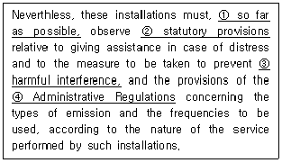
- 가능한 멀리
- 법규정
- 유해한 혼신
- 업무규칙
(정답률: 89%)
62. Choose the wrong Korean version for the underlined parts.
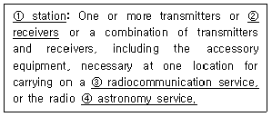
- 무선국
- 수신기
- 무선통신업무
- 위성업무
(정답률: 84%)
63. Choose the one which is not included to the purposes of ITU.
- To maintain and extend international cooperation among all its Member States for the improvement and rational use of telecommunications of all kinds.
- To promote and to offer technical assistance to deneloping countries in the field of telecommunications.
- To act as governing body of the Union, on behalf of the Plenipotentiary Conference within the limits of the powers delegated to it by the latter in the interval between Plenipotentiary Conferences.
- To promote the development of technicalfacilities and their most efficient operation with a view to improving the efficiency of telecommunication services.
(정답률: 95%)
64. Which of the following term is most improper?
- Radio - A general term applied to the use of radio waves
- Communication - Telecommunication by means of radio waves
- Radio waves or hertzian waves - Electromagnetic waves of frequencies arbitrarily lower than 3,000[GHz], propagated in space without artificial guide
- Telecommunication - Any trasmission, emission or reception of signs, signals, writings, images and sounds or intelligence of any nature by wire, radio, optical or other electromagnetic systems
(정답률: 82%)
65. Choose the most suitable one in the blank and complete the following sentence.
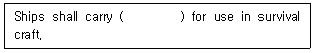
- Digital Selective Calling
- portable radio equipment
- Radiotelegraph installations
- Inmarsat radiotelephone installations
(정답률: 89%)
66. 다음 해상이동업무에서 “Order of priority of communications'가 올바른 것은?
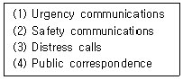
- (2)→(3)→(1)→(4)
- (3)→(1)→(2)→(4)
- (3)→(2)→(1)→(4)
- (2)→(3)→(4)→(1)
(정답률: 77%)
67. 다음 문장의 설명으로 적합한 것은?
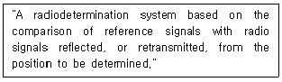
- Period
- RadioDetermination Station
- Radar
- Television
(정답률: 69%)
68. How do you pronounce the letter "J" of phonetic alphabet pronounces?
- JEW LEE ETT
- JEW LEE ETT
- JEW LEE ETT
- JEW LEE ETT
(정답률: 62%)
69. What is the phonetic word for the letter "C" in the appendix to the Radio Regulations?
- Canada
- Chicago
- Charlie
- Chamber
(정답률: 84%)
70. Select the most suitable Korean language for the underlined vocabulary.
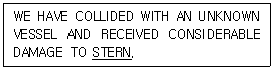
- 선수
- 선미
- 선교
- 선창
(정답률: 85%)
71. What do we call the follwing phrase in Korean?
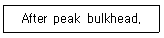
- 선수격벽
- 선미격벽
- 좌현격벽
- 우현격벽
(정답률: 89%)
72. What do we call 'Shaft tunnel' in Korean?
- 통로
- 측로
- 선로
- 축로
(정답률: 90%)
73. 다음 단어 중 “Nature of distress"에 속하지 않는 것은?
- Anchoring
- Abandon
- Collision
- Fire
(정답률: 79%)
74. 우리나라 최초의 등대이며 해상 무선표지국의 표지부호가 PM인 것은?
- 어청도
- 죽도
- 팔미도
- 거문도
(정답률: 90%)
75. 다음 중 아프리카 항로에 위치하고 있지 않는 항구는?
- Durban
- Port Elizabeth
- Port Arthur
- Dakar
(정답률: 74%)
76. 다음 해협 중 일본의 연근해 해역에 위치해 있지 않는 것은?
- Kii Strait
- Tsugaru Strait
- Bungo Strait
- Sunda Strait
(정답률: 85%)
77. 다음 중 The great Lakes에 포함되지 않는 것은?
- Orinoco
- Superior
- Michigan
- Huron
(정답률: 89%)
78. 열대성 저기압으로 풍력이 64노트 이상인 것으로 북대서양 카리브해에서 발생한 것을 무엇이라 하는가?
- 태풍
- 허리케인
- 사이클론
- 윌리윌리
(정답률: 71%)
79. 다음 중 온난전선에 대한 설명으로 맞지 않는 것은?
- 난기가 우세하여 한기를 올라타면서 진행하는 전선이다.
- 이 전선이 통과하면 기온이 상승한다.
- 전선의 경사가 비교적 급하여 날씨의 회복이 빠르다.
- 전선의 전방에 넓은 범위의 지속적인 강우를 보인다.
(정답률: 73%)
80. 다음 중 열대성 저기압의 이름과 발생지에 관한 설명으로 옳지 않은 것은?
- Typhoon은 태평양 서부적도 북부에서 발생한다.
- Hurricane은 서인도제도 부근에서 발생한다.
- Cyclone은 마다가스카르섬 부근 및 인도양에서 발생한다.
- Willy Willy는 멕시코만에서 발생한다.
(정답률: 94%)
5과목: 전파관계법규
81. 스퓨리어스발사에 해당하지 않는 것은?
- 고조파발사
- 대역외발사
- 기생발사
- 주파수변환에 의한 발사
(정답률: 56%)
82. 다음 중 해상이동업무에 있어서 통신의 우선순위가 가장 높은 것은?
- 조난통신
- 긴급통신
- 안전통신
- 기상관측통보
(정답률: 95%)
83. 다음 중 무선국의 허가증에 기재할 사항이 아닌 것은?
- 무선설비 종류
- 무선국의 목적
- 무선설비의 설치장소
- 무선종사자의 자격 및 정원
(정답률: 53%)
84. 다음 중 무선통신의 원칙으로 적합하지 않은 것은?
- 무선통신을 하는 때에는 정확하게 송신을 하여야 한다.
- 무선통신 송신 중 오류를 인지한 때에는 송신 완료 후 정정하여야 한다.
- 무선통신의 내용은 필요 최소한의 사항으로 이루어져야 한다.
- 무선통신을 하는 때에는 자국의 호출부호, 호출명칭을 사용하여 그 출처를 명확하게 하여야 한다.
(정답률: 95%)
85. 다음 중 방송통신기자재 적합성인증 신청시 구비할 서류가 아닌 것은?
- 사용자설명서
- 회로도
- 기기의 가격
- 대리인지정(위임)서
(정답률: 65%)
86. 무선국의 개설 조건으로 틀린 것은?
- 통신사항이 개설목적에 적합할 것
- 개설목적을 달성하는데 필요한 최대한의 주파수 및 안테나공급 전력을 사용할 것
- 개설목적·통신사항 및 통신상대방의 선정이 법령에 위반되지 않을 것
- 무선설비는 인명·재산 및 항공의 안전에 지장을 주지 아니하는 장소에 설치할 것
(정답률: 95%)
87. 다음 중 무선종사자를 무선종사자를 무선국에 배치할 수 있는 자는?
- 피성년 후견인
- 외환의 죄를 위반하여 5년형을 선고받고 집행이 끝난 후 3년이 경과한 자
- 파산선고를 받은 자
- 국가보안법을 위반하여 금고 이상의 형을 받고 그 집행 중에 있는 자
(정답률: 84%)
88. 다음 중 무선국의 분류에 대한 설명으로 틀린 것은?
- 항공국이란 항공기에 설치된 무선국이다.
- 선박국은 선박에 개설하여 해상이동업무를 행하는 무선국이다.
- 고정국은 고정업무를 행하는 무선국이다.
- 기지국은 육상이동국과 통신을 할 수 있다.
(정답률: 86%)
89. 디지털선택호출경보를 이용할 수 있는 최소한 하나의 초단파대 해안국의 무선전화 통신범위 안의 해역은?
- A1 해역
- A2 해역
- A3 해역
- A4 해역
(정답률: 94%)
90. 선박이나 항공기에 의무적으로 개설하여야 하는 무선국을 제외한 무선국 개설허가의 유효기간은 최대 몇 년인가?
- 3년
- 5년
- 7년
- 10년
(정답률: 95%)
91. 다음 괄호 안에 들어갈 내용으로 가장 적합한 것은?
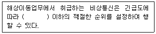
- 조난통신
- 긴급통신
- 안전통신
- 업무통신
(정답률: 84%)
92. 다음 중 ITU의 공용어 및 업무 용어가 아닌 것은?
- 브라질어
- 중국어
- 스페인어
- 러시아어
(정답률: 85%)
93. 국제전기통신연합이 법률문서나 각종회의에 사용하는 공용어 또는 업무용어(언어)를 바르게 나타낸 것은?
- 중국어, 스페인어, 영어, 불어, 러시아어, 아랍어
- 중국어, 스페인어, 러시아어, 아랍어, 일어, 포르투갈어
- 영어, 불어, 스페인어, 아랍어, 독어, 포르투갈어
- 아랍어, 중국어, 스페인어, 일어, 독어, 불어
(정답률: 95%)
94. 다음 중 국제전기통신연합의 목적이 아닌 것은?
- 모든 회원국간에 국제적인 협력을 유지·증진한다.
- 전기통신업무의 효율을 증진한다.
- 전기통신업무의 이용을 증진한다.
- 전기통신업무의 협력을 통하여 인명 안전을 확보하지 않는 조치를 채택하도록 촉진한다.
(정답률: 77%)
95. 현행 전파법 중 무선국 운용 기준의 근거가 되는 국제 규정은?
- SOLAS : 해상 인명 안전 조약
- ICAO : 국제 민간 항공 기구
- ITR : 전기 통신 규칙
- RR : 전파규칙
(정답률: 81%)
96. GMDSS의 MF DSC 사용주파수는 어느 것인가?
- 2,179[kHz]
- 2,182[kHz]
- 2,187.5[kHz]
- 2,091[kHz]
(정답률: 71%)
97. 다음 중 통신보안 위반사항이 아닌 통신 내용은?
- 국가원수의 공개 행사계획 및 진행사항의 방송
- 간첩 및 용의자의 출현 및 수사활동 사항
- 국가안보에 중대한 영향을 초래하는 정보·첩보에 관한 사항
- 공안유지에 중대한 영향을 초래하는 정보·첩보에 관한 사항
(정답률: 75%)
98. 다음 중 보안용 호출명칭을 사용하지 않아도 되는 통신망이나 무선국은?
- 전기통신업무를 제공받기 위한 무선국
- 국가 안전보장상 주요통신망
- 국가 기간통신망 및 방위산업통신망
- 기타 무선국 허가관서의 장이 필요하다고 인정하는 무선국
(정답률: 69%)
99. 다음 중 감청에 대한 설명으로 알맞은 것은?
- 통신운용상태를 도청하기 위해 공개적으로 엿듣는 것
- 통신보안의 위반 여부를 감독하기 위해 공개적으로 엿듣는 것
- 통신 내용을 탐지하기 위해 비공개적으로 엿듣는 것
- 통신 제원의 위반사용 여부를 감독하기 위해 비공개적으로 엿듣는 것
(정답률: 95%)
100. 다음 괄호 안에 들어갈 내용으로 가장 적합한 것은?
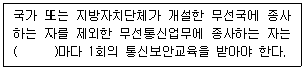
- 1년
- 2년
- 3년
- 5년
(정답률: 88%)